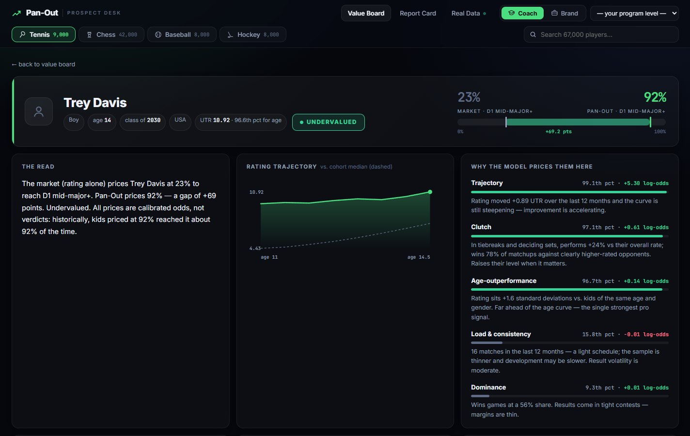
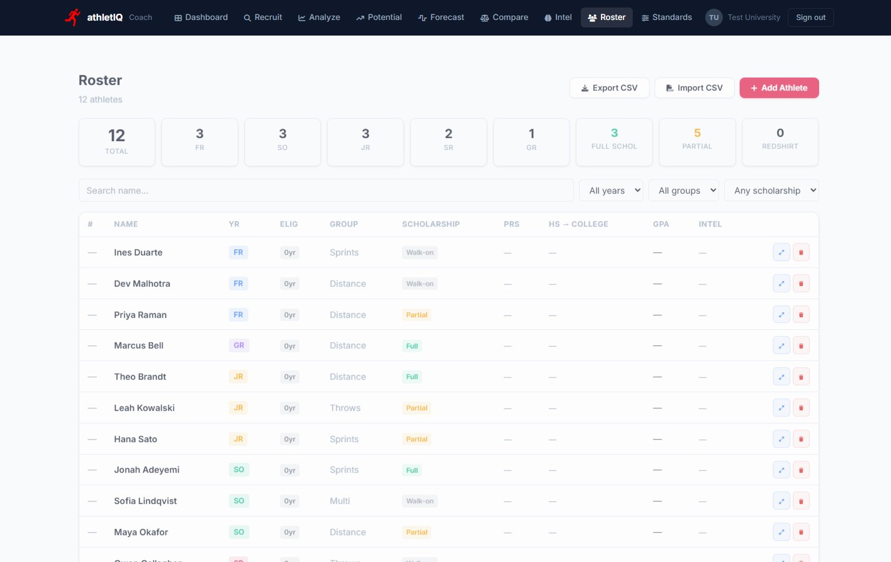
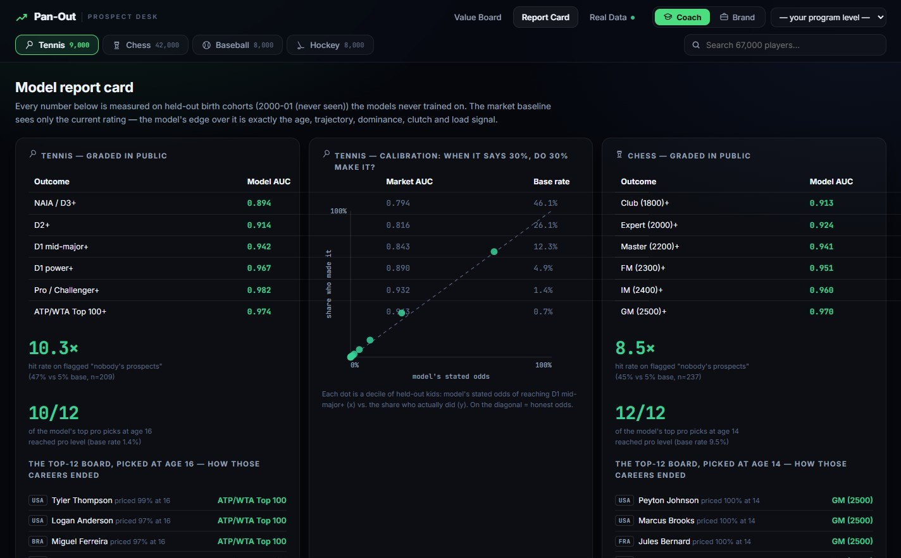
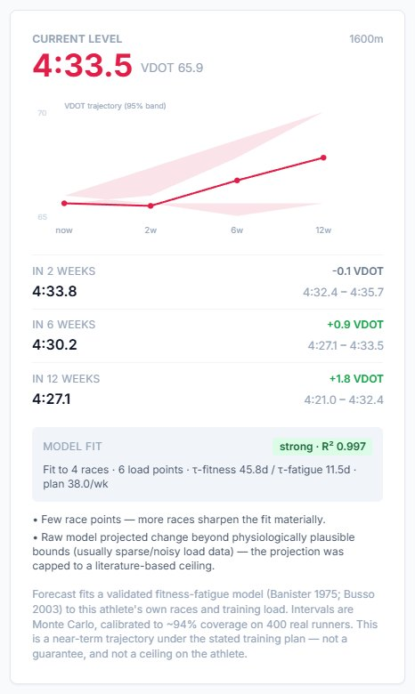
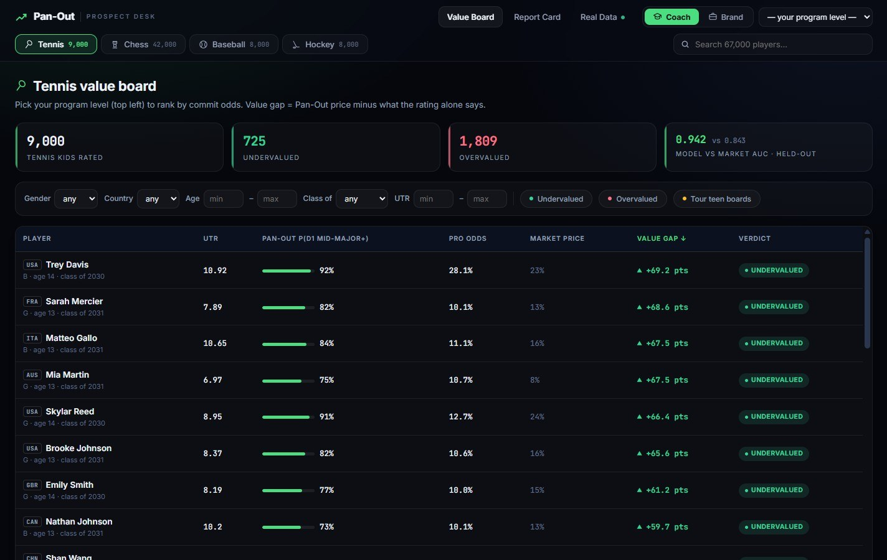

Here are some things I've built.
I'm Ruhan Khanna, a junior at Sidwell Friends School in Washington, DC.




athletIQ
A recruiting platform college track coaches use to find, compare and track recruits.
- Stanford, UNC
- among programs under contract
- $8K
- backing from Microsoft and AWS
- 51
- state and DC ranking lists covered
- 314
- commits since the 2025 rebuild
One scale for every event
Every race converts to VDOT, Jack Daniels' oxygen-cost model, so an 800m runner and a miler can be compared, and a high school mark can be projected to college.
VDOT converterThe same formulas the product uses.
65.5VDOT
Forecasts from training, not just results
A Banister fitness-fatigue model, fit to each athlete's own races, with 4,000 sampled parameter sets for an honest range.

Fitness-fatigue modelDrag the weekly mileage bars.
Benchmark before you ship
Three injury-risk models tested on 42,798 athlete-weeks, split by athlete. The simplest one won.
Pan-Out, for other sports
An athletIQ product that prices junior tennis, chess, baseball and hockey prospects with five stacked gradient-boosted models and calibrated odds.
- 0.94 vs 0.84
- AUC against ratings, simulated data
- 0.844 vs 0.841
- on real ATP careers: the honest result

How it got here
- 2023Tennis rating
- Dec 2023First sprint rating
- Jun 2025Athlete platform, shut down
- Nov 2025Rebuilt for coaches
- Jan 2026National search, 164 commits
- Spring 2026Scraper service
- Summer 2026Forecasting and roster
SECRET, a 48-volt race car
Our school's electric car for the Electric Vehicle Grand Prix, where the most distance in one hour on one battery wins.
- 3
- DC Grand Prix raced, 2024 to 2026
- Top prize
- for 3D printing
- Dubai
- invited to the 2027 Grand Prix
- $7K
- raised; built with UMD Formula SAE
Thick lines carry 48V traction current; thin lines are signals. Select any part.
Pacing to an energy budget
Each lap, the Arduino spreads the remaining battery over the laps left and tells the driver to speed up or back off. Drag grows with speed cubed, so going out fast is costly.
One-hour race simulatorRace a driver's speed with and without pacing.
Modeled car with assumed values (150 kg, 48V 26Ah lead-acid pack, 0.6-mile lap), not measured from ours.
Meridian
A model that ranks which investors fit a startup, built to study who gets funded and to help underserved founders find the right investors.
- 907K
- startup-investor pairs trained on
- 48,046
- investors ranked for each startup
- 20,000+
- founders served through partner groups
- 2
- presentations: UVA symposium, ICMBF 2026
LightGBM LambdaRank over 16 features, including MiniLM text similarity, split by startup so no company leaks into testing. Paper in review.
ReachBot
An assistant that answers Reach Capital founders' questions from the firm's resource library, citing the exact page or recording.
- 696
- sources indexed
- 11,244
- passages searched per question
- 137
- recorded sessions transcribed
- $0.005
- per answer, vs about $1.80 pasting the whole library
Retrieval-augmented generation: each question pulls the closest passages by vector similarity, and the model answers only from them, with citations. A weekly job keeps the index current for about a cent.
The retrieval gateWeak evidence means a shorter answer, or none.
Future Fellows
An evaluation system for a fellowship that places high schoolers in paid work: AI organizes the evidence, a person makes every decision.
- 150
- automated tests guarding the rules
- 3-pass
- blinding of names and schools
- 0
- total scores or rankings, by design
- 5
- model runs per score, median kept
Applicants share a code repository; the system reads its commit history and asks questions only the real author could answer. Every score must quote the application word for word.
The quote checkA sample application. Paraphrases fail.
Reading a script no one can read
Our paper separates Indus signs that stand for words from signs that stand for sounds, using only where they appear.
- Published
- peer-reviewed, IJCA Vol. 187, 2025
- $5K
- Emergent Ventures grant
- 4,500
- years old, with no bilingual key
A toy corpus so the method fits on screen.
Can hardware prove a paper is real?
We re-ran published business and economics papers inside Intel TDX confidential VMs, which can cryptographically attest to exactly what code ran.
- 19 of 27
- replications succeeded
- $1.33
- average cost per paper
- 2h 10m
- average run
- 2
- clouds: Azure and Google